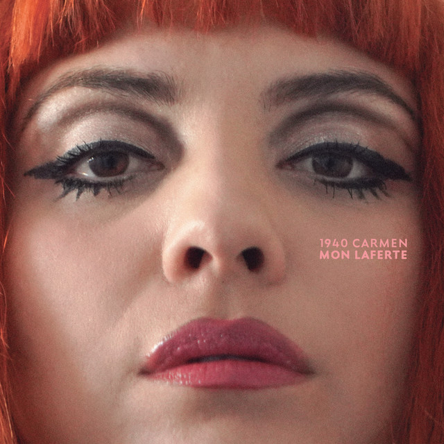
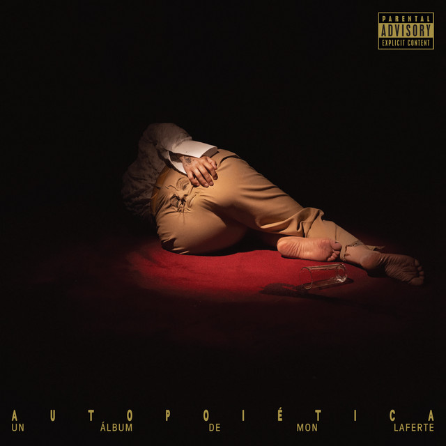

La música de Mon Laferte
Mon Laferte es una cantautora chilena-mexicana reconocida por su versatilidad, fusionando bolero, pop, rock, cumbia y música folclórica con una fuerte carga melo-dramática y teatral. Su música destaca por la intensidad emocional, la voz potente y letras que exploran el amor, desamor y empoderamiento, destacando éxitos como "Tu Falta De Querer"
Vol. 1 (2015)
- Tu falta de querer
- Amor completo
- Tormento
- Salvador
- Malagradecido
La Trenza (2017)

- Amárrame
- Mi buen amor
- Primaveral
- Flaco
- No te fumes mi Marihuana
Norma (2018)
- El beso
- Por qué me fui a enamorar de ti
- Cumbia para olvidar
- Quedate esta Noche
1940 Carmen (2021)

- Supermercado
- Algo es Mejor
- Good Boy
- Placer Hollywood
Autopietica (2023)

- Metamorfosis
- Casta Diva
- No+SAD
- Prendele Fuego
Femme Fatale (2025)
- Melancolia
- Ocupa mi Piel
- Vida Normal
- Hasta Que Nos Despierte La Soledad
La música de Mon Laferte es conocida por ser muy emocional, intensa y diversa, porque mezcla muchos estilos musicales y letras muy personales. Su propuesta destaca en la música latinoamericana porque combina rock, pop, bolero, balada, música latinoamericana y sonidos tradicionales.